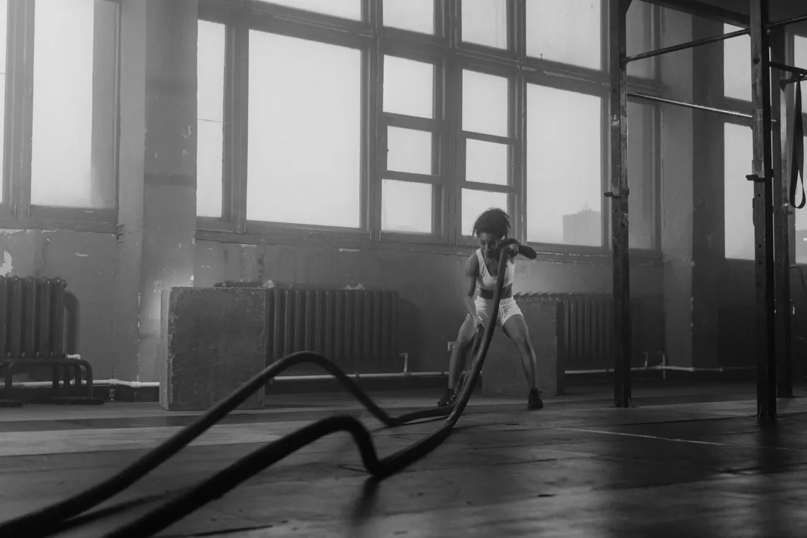
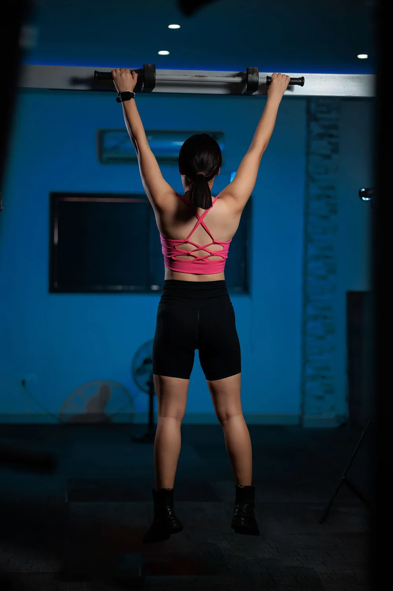
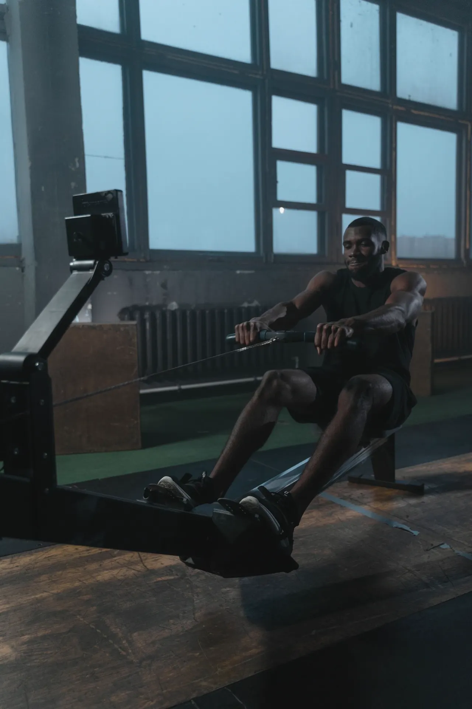
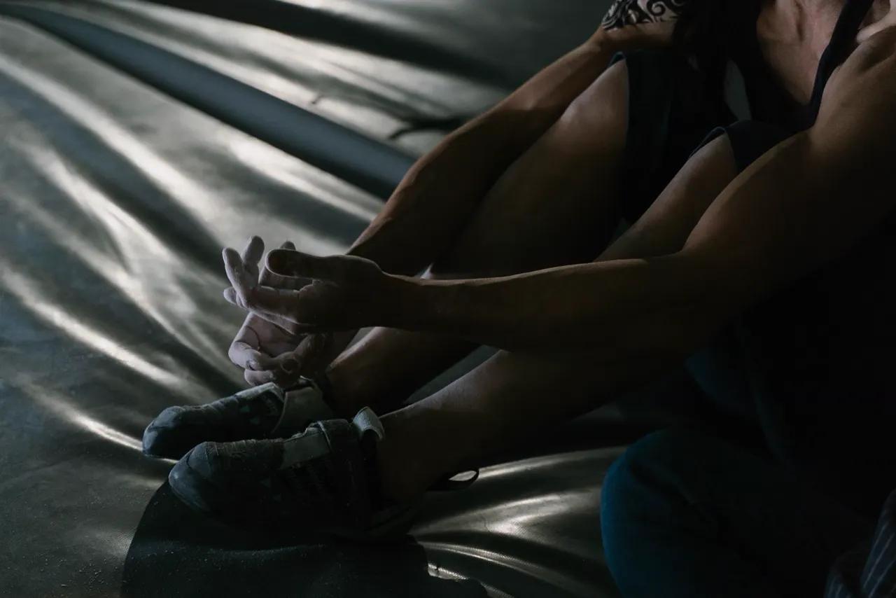
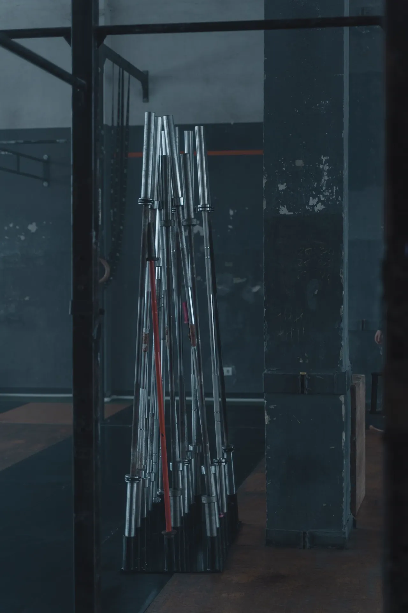
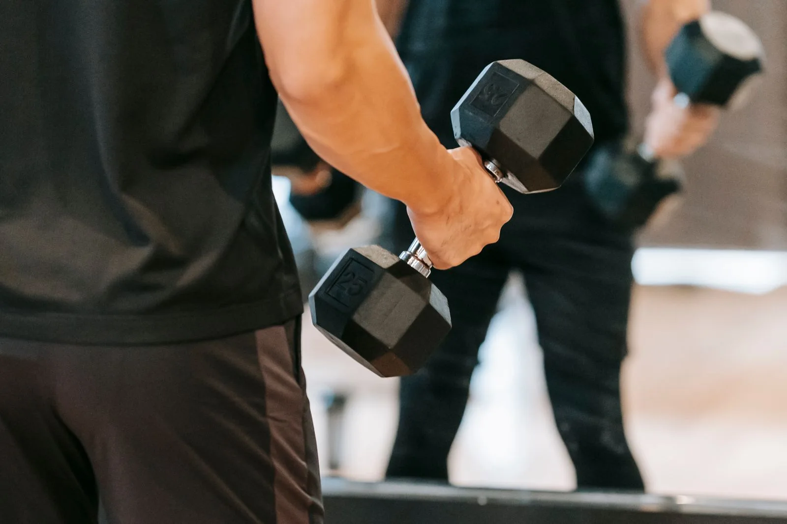
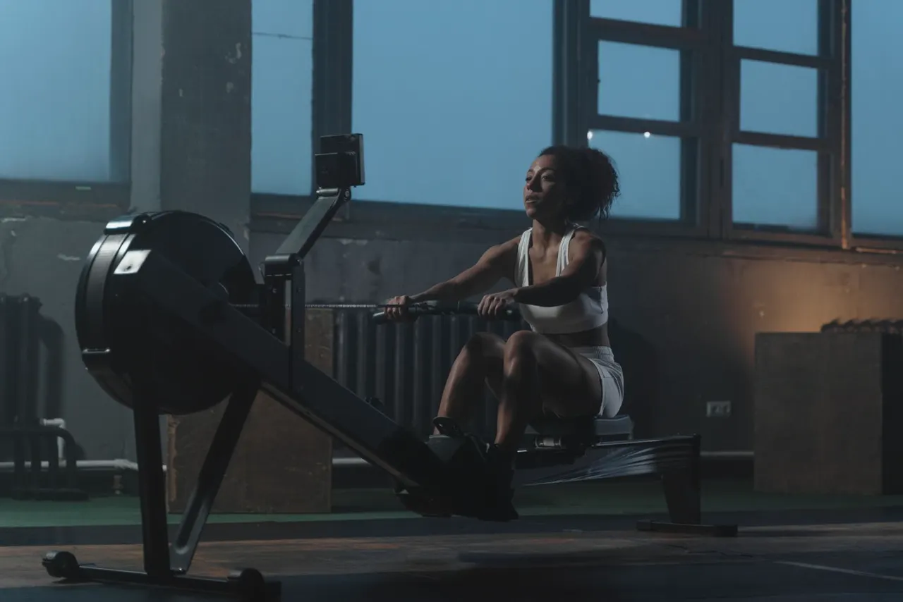
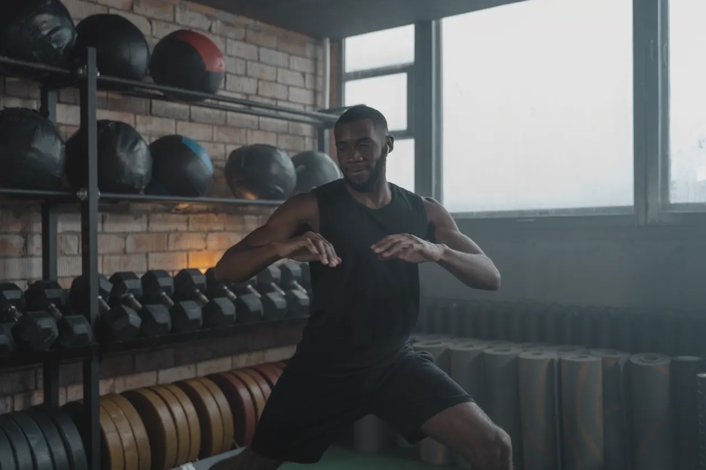

Forja Gimnasio
Entrená

en grupo, ganá fuerza
y encontrá tu ritmo
en Forja.
Más fuertecada día
Entrenamientos
Funcional
Fuerza, coordinación y resistencia en un mismo entrenamiento. Cada sesión combina movimientos de todo el cuerpo.
Fuerza
Barra, mancuernas y técnica. Aprendé a levantar y progresá con cargas que tengan sentido para vos.
Resistencia
Remo y circuitos para sostener el esfuerzo. El ritmo cambia. El trabajo sigue.
HIIT
Intervalos intensos con pausas cortas. Una sesión dinámica para trabajar potencia y capacidad aeróbica.
Movilidad
Movimientos controlados para trabajar el rango articular y volver a la próxima sesión con más soltura.
El club

Esto es Forja
En equipo
Entrenar rodeado de gente te cambia el ritmo. Cada uno trabaja a su nivel y el grupo empuja.
Con técnica
El entrenador está en el piso para guiarte, ajustar el ejercicio y acompañar tu progreso.
A tu ritmo
Fuerza, funcional y resistencia. Podés combinar lo que más te guste y darle continuidad.
Dentro del club



Dudas
¿Puedo empezar de cero?
Sí. Los ejercicios y las cargas se adaptan a tu experiencia, desde la primera clase.
¿Qué llevo para entrenar?
Ropa cómoda, zapatillas y agua. El equipo para cada sesión está en el gimnasio.
¿Cómo es una clase en Forja?
Empezás con una entrada en calor, seguís con el trabajo del día y terminás con una vuelta a la calma.
Cultura Forja
Los días que volvés también cuentan.